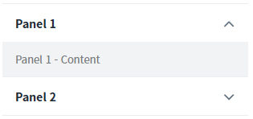
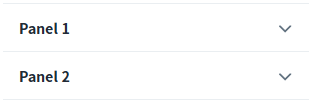
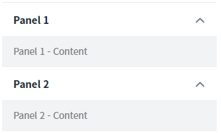
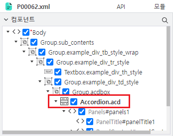
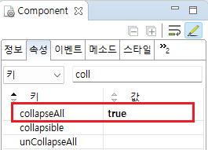
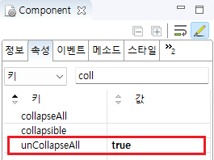

Accordion의 'collapseAll' 속성과 'unCollapseAll' 속성을 사용하여 패널의 열림 상태를 설정한 예제입니다. 기본 패널 상태는 모든 패널이 닫히고 첫 번째 패널만 열려 있는 것입니다.
다음은 예제에서 사용한 속성과 설명입니다.
collapseAll : 모든 패널 닫힘
unCollapseAll : 모든 패널 열림
브라우저에 초기 출력 시 패널의 기본 상태
브라우저에 초기 출력 시 모든 패널을 닫기
브라우저에 초기 출력 시 모든 패널을 열기
브라우저에 출력된 컴포넌트를 확인합니다. 상태별 컴포넌트가 구성되어있습니다.
Image 1.브라우저(Chrome) 실행 예시 - 첫 번째 패널만 열린 상태

Image 2.브라우저(Chrome) 실행 예시 - 모든 패널이 닫힌 상태

Image 3.브라우저(Chrome) 실행 예시 - 모든 패널이 열린 상태

Accordion 컴포넌트는 패널이 구성되어있는 복합 구조로 되어있기 때문에 스튜디오에서 디자인 탭의 '컴포넌트' 구조를 사용하여 선택하고 컴포넌트의 속성을 지정하는 것을 추천합니다.
Image 4.웹스퀘어 스튜디오의 '디자인' 탭 예시

컴포넌트의 collapseAll 속성을 'true'로 정의합니다. //[default: "false", "true"] 컴포넌트를 처음 로딩할 때, 모든 패널이 펼쳐져 있도록 설정합니다.
Image 5.웹스퀘어 스튜디오의 Component View 예시

Example 1.Source
<!-- accordion의 소스 본문 예시 --> <w2:accordion collapseAll="true"> <!-- 중략 --> </w2:accordion>
컴포넌트의 unCollapseAll 속성을 'true'로 정의합니다. //[default: "false", "true"] 컴포넌트를 처음 로딩할 때, 모든 패널이 펼쳐져 있도록 설정합니다.
Image 6.웹스퀘어 스튜디오의 Component View 예시

Example 2.Source
<!-- accordion의 소스 본문 예시 --> <w2:accordion unCollapseAll="true"> <!-- 중략 --> </w2:accordion>
collapseAll
unCollapseAll